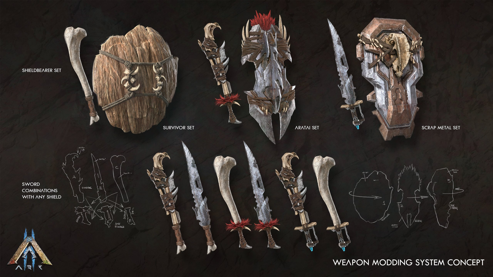

Dinosaurs
Stegosaurus
Stegosaurus regium has approximately 16 paired rows of plates along its back, flanked by another, smaller pair of 6 plates. This is contrary to the alternating rows on Stegosaurus fossils I've seen in museums. Not surprisingly, Stegosaurus uses the spines on its tail to defend itself. While not aggressive, Stegosaurus will come to the aid of another nearby Stegosaurus. This implies it to be a herd animal.
Brachiosaurus
Towering over other creatures of the Island and Abberation, Brachiosaurus is a sight to behold. Being a mostly docile herbivore, Brachiosaurus can become very defensive when threatened. With a thick scaly hide and its massive size, few creatures can defeat this behemoth. Brachiosaurus have been observed to briefly take a bipedal stance, rising up on its hind legs in an act of defense. From there, they use all of their body weight to unleash a catastrophic stomp on their attackers. In the unlikely possibility that a Brachiosaurus is in mortal danger, they will let out a magnificent bellow, which seems to frighten even the most powerful predators. Fortunately, this bipedal state is also the Brachiosaurus' weakness. Provoking the dino into this stance allows survivors to target its hind legs, which are supporting all of the beasts bulk. With enough damage, the Brachiosaurus will collapse into a an unconscious state, allowing for taming. When tamed, Brachiosaurus seem to have a proficiency in gathering all resources. Whether it be stone, metal, wood, or fiber and berries, Brachiosaurus can gather it all quite efficiently. This, coupled with its extraordinary carry capacity, make them powerful tames for resource gathering and mobile storage.
Ankylosaurus
Unlike many of the herd animals on the Island, Ankylosaurus crassacutis tends to live in small family units. I believe they can afford to stick with smaller groups because of their incredibly thick skin, for which they're named. Despite not being among the largest of the Island's herbivores, Ankylosaurus is one of the more difficult creatures to take down. Its thick, armored skin seems to make it more than a match for several of the mid-sized predators that would otherwise hunt it. Reckless carnivores are just as likely to hurt themselves on Ankylosaurus' spikes, as they are to get hit by its tail.
Carnotaurus
Carnotaurus pressor is a distinctive creature that falls between a medium and large predator. It lives primarily on flat, clear ground, where it can capitalize on its speed. Additionally, it seems to have no qualms about running away from larger predators instead of fighting. The horns of the Carnotaurus seem to be used more for fighting rivals than actual hunting. This doesn't mean the horns aren't dangerous, though. They can still eviscerate larger prey. Carnotaurus is one of the smaller and more compact of the large predators. If Tyrannosaurus is the “lion” of the Island, Carnotaurus would certainly be the “cheetah.” The real threat of a Carnotaurus is not being able to escape it once it has spotted you.
Game Play
Story
Ark 2 is the sequal to ARK: Survival Evolved. It was annouced in 2020 and was set to be realesed end of 2022 or early 2023. But with some deylays it says comming soon. Ark 2 will be using unreal engine 5 and it will follow Riddick(Vin Diesel) and his daughter as they try to settle a new world.
Game Mechanics
Unlike the first ARK this game will be only in 3rd person and feature a whole new souls-like melle combat. It will have target-lock, blocks, dodges, combos, staggers, special attacks, emphasizing player-skill-based action.Other major features will inlcide advance AI creatures where they can hunt with all sensories. And a PVE force who will have their own tames.
Latest Update
Weapon Modding System
Ark 2 will have multiple tiers that can be combined including abilty to customise the appearance & abilities. Concepts revealed Survivor, Aratai & Scrap Metal sets. Weapon system allows players to use games resources to custom build own weapons, with the chosen resources affecting both appearance and actual abilities of weapons & tools.
